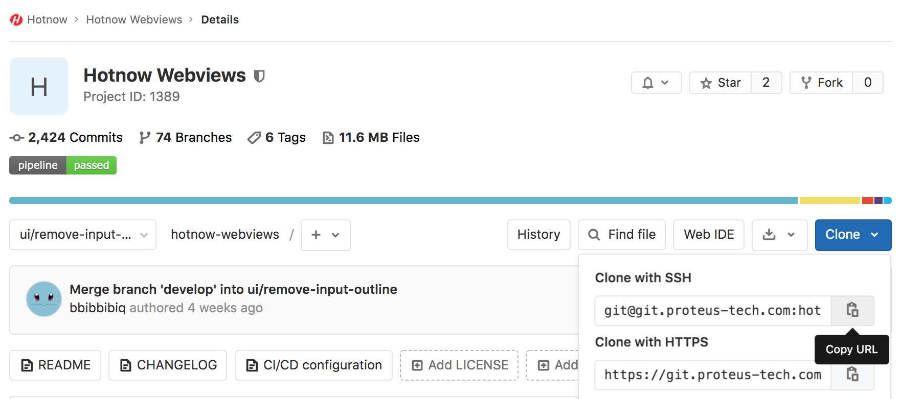

GIT TUTORIAL ⚙️
Install Git
MacOS
ขั้นตอนที่ 1 : กดปุ่ม
Control+SpaceBar
ที่คีย์บอร์ด แล้วพิมพ์ว่า
Terminal
ขั้นตอนที่ 2 : เปิด Terminal แล้ว Copy คำสั่งเพื่อติดตั้ง HomeBrew
/usr/bin/ruby -e "$(curl -fsSL
https://raw.githubusercontent.com/Homebrew/install/master/install)"brew
doctor
ขั้นตอนที่ 3 : ติดตั้ง Git โดยใช้คำสั่ง
brew install git
Linux
ขั้นตอนที่ 1 : กดปุ่ม
Ctrl+Alt+t
ที่คีย์บอร์ด เพื่อเปิด Terminal
ขั้นตอนที่ 2 : Copy คำสั่งเพื่อติดตั้ง Git
sudo apt update && sudo apt upgrade && sudo apt install git
ต้องการ Clone project ลงมาที่เครื่องของเรา ?

กดปุ่ม Clone แล้วเลือก Copy URL
สามารถ Clone project ลงมาที่เครื่องของเราได้โดยใช้คำสั่ง
git clone <URL ที่Copyมา>
เช่น
git clone git@git.proteus-tech.com:hotnow/hotnow-webviews.git
ได้การ์ดแล้ว จะสร้าง Branch ใหม่ยังไงดี ?
 เช็คให้แน่ใจ
ว่าปัจจุบันเราอยู่ที่ branch develop หรือไม่ ซึ่งสามารถเช็คได้โดยใช้คำสั่ง
git branch
หาก branch ปัจจุบัน ไม่ใช่ branch develop
เราสามารถย้าย branch
ได้โดยใช้คำสั่ง
git checkout <branch_name>
หากเป็น branch develop แล้ว
เราสามาถสร้าง branch ใหม่
ได้โดยใช้คำสั่ง
git checkout -b <feature_name>
เช็คให้แน่ใจ
ว่าปัจจุบันเราอยู่ที่ branch develop หรือไม่ ซึ่งสามารถเช็คได้โดยใช้คำสั่ง
git branch
หาก branch ปัจจุบัน ไม่ใช่ branch develop
เราสามารถย้าย branch
ได้โดยใช้คำสั่ง
git checkout <branch_name>
หากเป็น branch develop แล้ว
เราสามาถสร้าง branch ใหม่
ได้โดยใช้คำสั่ง
git checkout -b <feature_name>
git fetch
git pull
git merge
git add
git commit
git push